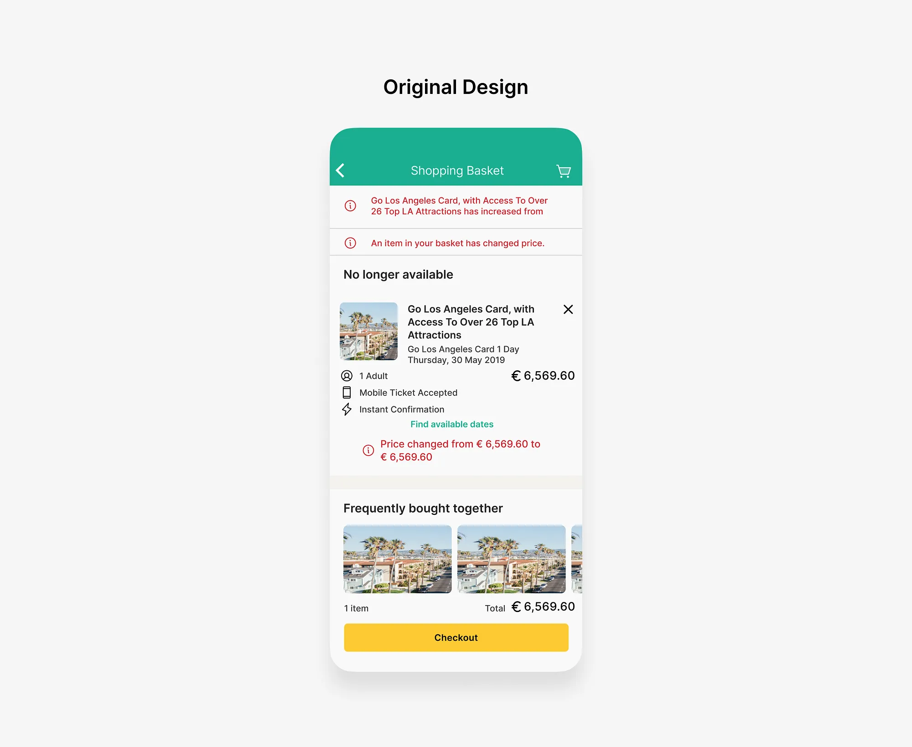
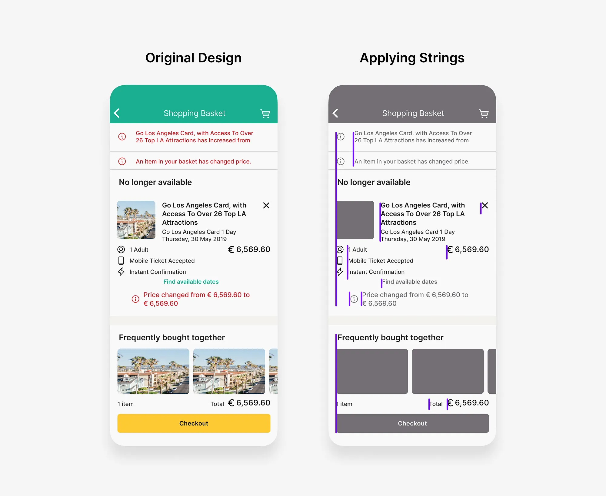
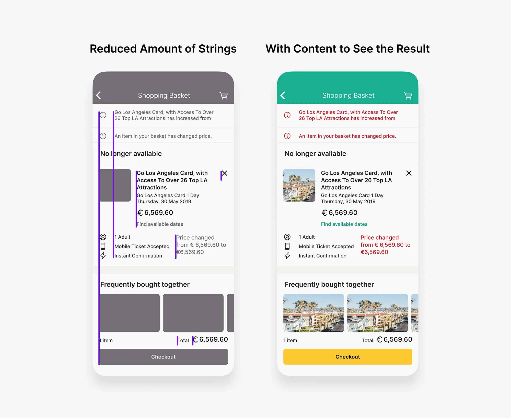
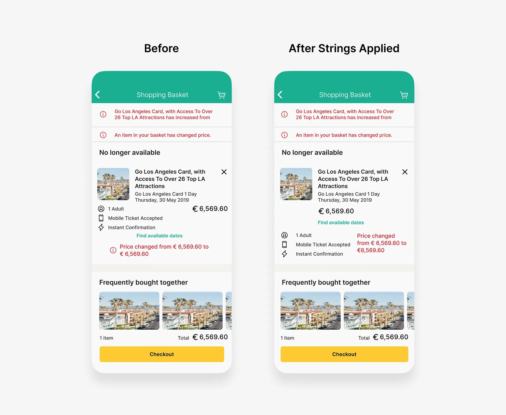
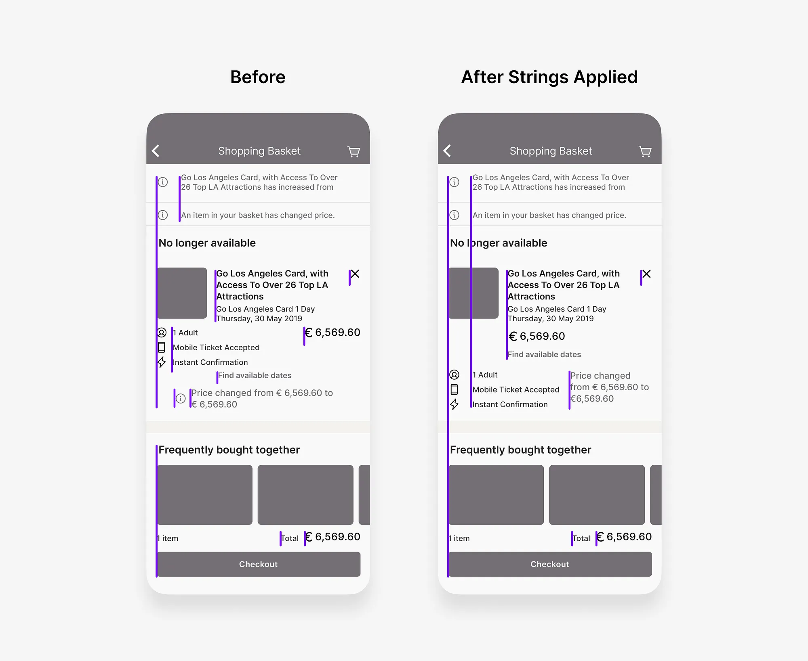

How to Use Strings Method to Improve Any App UI Design
Introduction
Sometimes, when you’re building a UI or trying to analyse competitors’ apps, you notice that something is wrong with the UI, but you can’t say for sure what it is. It just looks wrong, or not well aligned, or noisy.
If you need to make the UI look clean and professional, you can use Strings Method to clean it up quickly.
Let’s take a look at this screen first, it’s clearly noisy and not well aligned:

How to use Strings Method in UI design
- As a first step we need scan each line of the screen horizontally and draw vertical line (a string) every time we see any new object on the path, like that:

- Second, you need to re-build the UI and reduce amount of vertical lines. Without changing typography, colors and improving layout, but just by reducing amount of strings you can improve the UI dramatically:

- Now we can compare original design with updated:
 
Using the Strings Method can be a valuable tool for improving UI design, but it’s important to recognize that columns also play a role in this process. While the Strings Method helps clean up the UI quickly, columns can provide structure and organization to your design. Think of columns as a foundation, ensuring elements are neatly arranged and aligned, while the Strings Method is like a fine-tuning tool for detailed analysis.